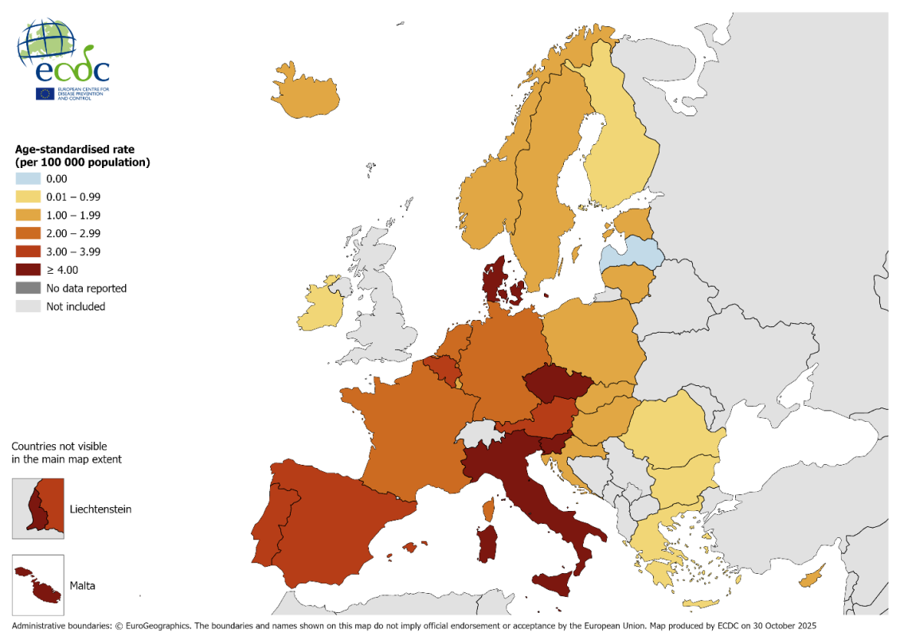
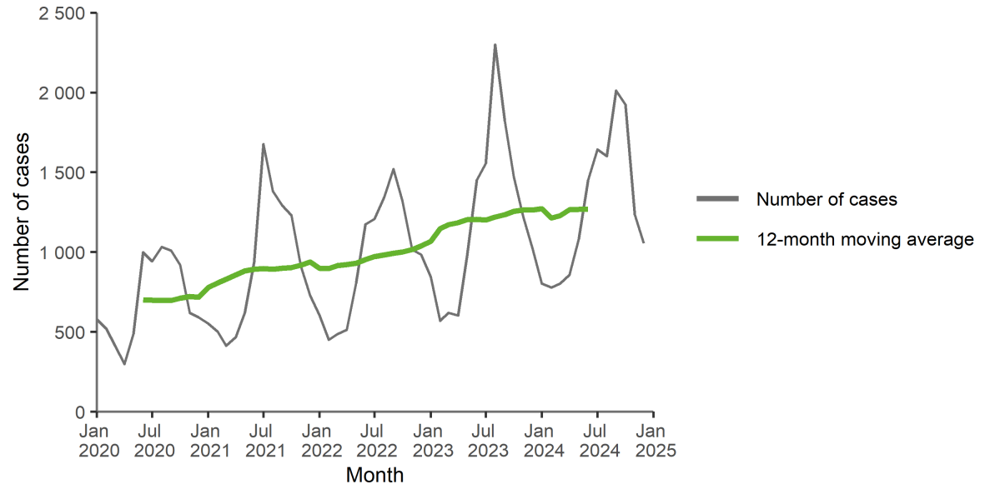
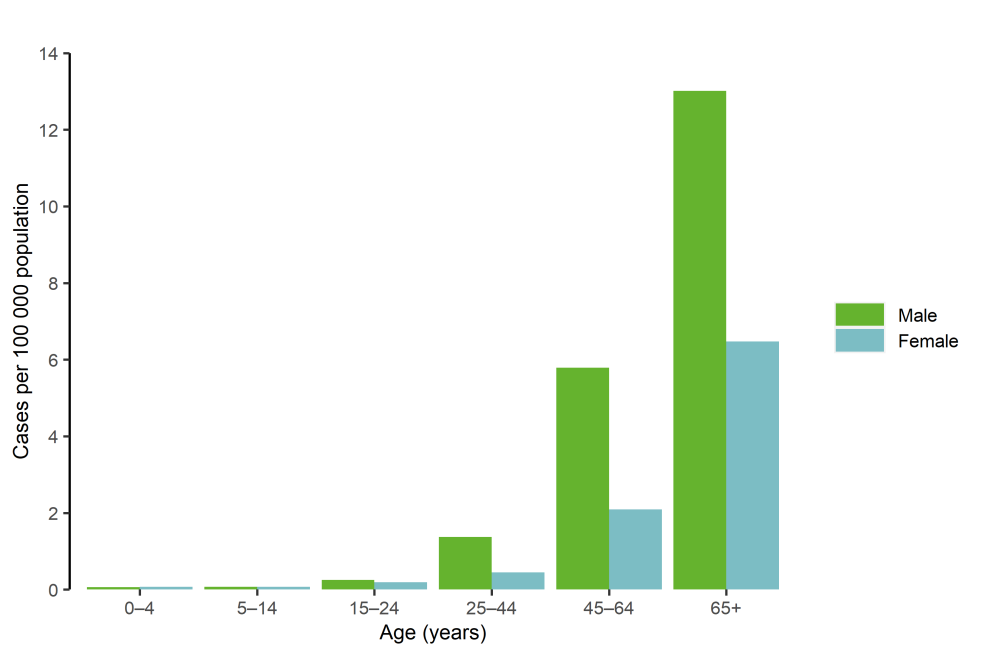

Legionella is widespread in freshwater and artificial water systems, where biofilm formation enhances its persistence (Ma et al., 2026). Growth is favoured by water temperatures ranging from 25 0C to 42 0C, low levels of biocide, sediment accumulation and stagnation (EDC, 2026). Transmission occurs mainly through inhalation of aerosols from cooling towers, showers, humidifiers and hot tubs, whereas person-to-person spread is rare (Mahgoub et al., 2026).
The global incidence of the disease is poorly characterised due to inconsistent diagnostic capabilities and monitoring, leading to significant under-reporting (Ma et al., 2026). A meta-analysis of 57 studies estimated a pooled global Legionellas prevalence of 13.7% (Graham et al., 2020). Reported incidence is still increasing in areas with strong surveillance and as a result in the United States, it increased from 0.48 per 100,000 in 1992-2002 to 2.71 per 100,000 in 2018 (Barskey, Derado and Edens, 2022). In Japan, incidence rose by an average of 20.1% annually during 1999-2017, with rates in men approximately five times those in women (Fukushima et al., 2021). Reported incidence also varies widely between countries (Table 1). Global Burden of Disease data for 2021 show the highest age-standardised death rate, 8.15 per 100,000, in people over 70 years (Zhong et al., 2025).
Table 1: Global epidemiological characteristics of Legionnaires' disease (Ma et al., 2026).
| Country/region | Incidence (per 100,000 population) |
|---|---|
| America | 2.71 |
| Canada | 0.41 |
| Spain | Positive rate: 65.40% |
| France | 2.0 |
| Italy | Positive rate: 19.80% |
| Germany | Positive rate: 20.07% |
| Australia | 2.1 |
| New Zealand | 2.7 |
| Japan | 0.2–0.7 |
| South Korea | 0.74 |
| Singapore | 0.28 |
| Thailand | Unknown |
| China | Unknown |
| Hong Kong | 0.9 |
In 2024, 29 EU/EEA countries reported 15,362 cases, a notification rate of 3.4 per 100,000 and the highest of the past decade (EDC, 2026). This continues an earlier rise from 1.2-1.4 per 100,000 in 2012-2016 to 1,8-2,2 in 2017-2019, strongest among those over 60 years (Sammuelson et al., 2023). Rates ranged from below 0.5 to 9.6 per 100,000 in Slovenia, while France, Germany, Italy and Spain accounted for 71% of cases (Figure 1). Of 12,041 cases with known outcome, 9% were fatal (EDC, 2026).

Legionnaires' disease is seasonal: 57% of European cases in 2024 occurred between June and October (Figure 2). Seasonality has intensified in the United States and Europe (Barskey, Derado and Edens, 2022; Sammuelson et al., 2023). Warm, humid weather and higher rainfall are associated with increased incidence (Mahgoub et al., 2026). In Europe, 87% of cases occurred in people aged over 50 years and rates were highest among males aged over 65 years at 13.0 per 100,000 (Figure 3).


Most cases are sporadic and over 70% are community-acquired, the remainder being travel- or healthcare-associated (Mahgoub et al., 2026). Legionnaires' disease accounts for an estimated 2-15% of community-acquired pneumonia and mortality ranges from 4% to 40% (Mahgoub et al. 2026). In 2024, 32 European outbreaks involving 365 cases were reported, yet a source was identified in only 16% (EDC, 2026).
Legionella pneumophila serogroup 1 caused 75% of culture-confirmed European cases in 2024 (EDC, 2026). In contrast, Legionella longbeachae, associated with potting mix and compost, predominates in Australia and New Zealand (Ma et al., 2026). Since 88% of European cases are diagnosed by urinary antigen testing which detects only serogroup 1, other serogroups are probably under detected (Mahgoub et al., 2026).
References
- Barskey, A.E., Derado, G. and Edens, C. (2022). Rising incidence of Legionnaires’ disease and associated epidemiologic patterns, United States, 1992–2018. Emerging Infectious Diseases, 28(3), pp. 527–538. https://doi.org/10.3201/eid2803.211435
- European Centre for Disease Prevention and Control (ECDC) (2026). Legionnaires’ disease: annual epidemiological report for 2024. Stockholm: ECDC. Available at: https://www.ecdc.europa.eu/en/publications-data/legionnaires-disease-annual-epidemiological-report-2024 (Accessed: 5 November 2026).
- Fukushima, S., Hagiya, H., Otsuka, Y., Koyama, T. and Otsuka, F. (2021). Trends in the incidence and mortality of legionellosis in Japan: a nationwide observational study, 1999–2017. Scientific Reports, 11, 7246. https://doi.org/10.1038/s41598-021-86431-8
- Graham, F.F., Hales, S., White, P.S. and Baker, M.G. (2020). Review global seroprevalence of legionellosis – a systematic review and meta-analysis. Scientific Reports, 10, 7337. https://doi.org/10.1038/s41598-020-63740-y
- Ma, J., Dong, T., Li, F., He, C., Li, B. and Liu, Z. (2026). Legionellosis: global epidemiology and current perspectives on diagnosis and treatment. Infection and Drug Resistance, 19, 603565. https://doi.org/10.2147/IDR.S603565
- Mahgoub, S., Awosika, A.O., Nguyen, A.D. and Tobin, E.H. (2026) ‘Legionnaires’ disease’, in StatPearls. Treasure Island (FL): StatPearlsPublishing. Available at: https://www.ncbi.nlm.nih.gov/books/NBK430807/ (Accessed: 6 November 2026).
- Samuelsson, J., Payne Hallström, L., Marrone, G. and Gomes Dias, J. (2023). Legionnaires’ disease in the EU/EEA: increasing trend from 2017 to 2019. Eurosurveillance, 28(11), 2200114. https://doi.org/10.2807/1560-7917.ES.2023.28.11.2200114
- Zhong, Y., Shen, L., Zhou, Y., Sun, Y., Fu, X. and Huang, H. (2025). The global burden and trends of Legionella spp. infection-associated diseases from 1990 to 2021: an observational study. Journal of Epidemiology and Global Health, 15(1), 3. https://doi.org/10.1007/s44197-025-00342-9